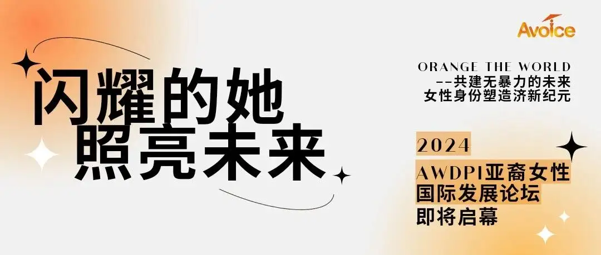
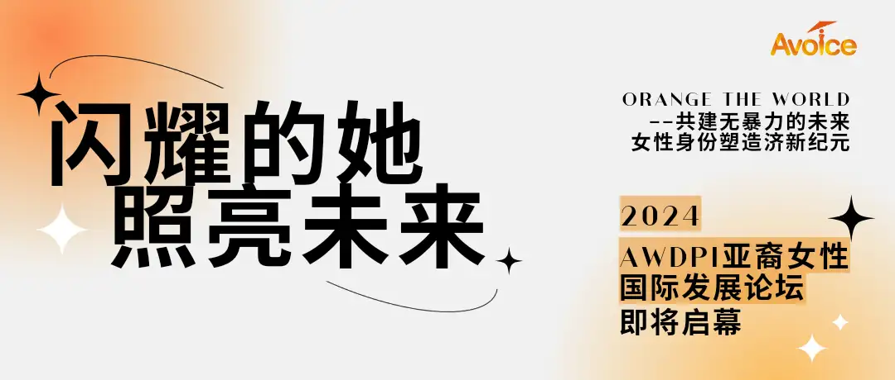
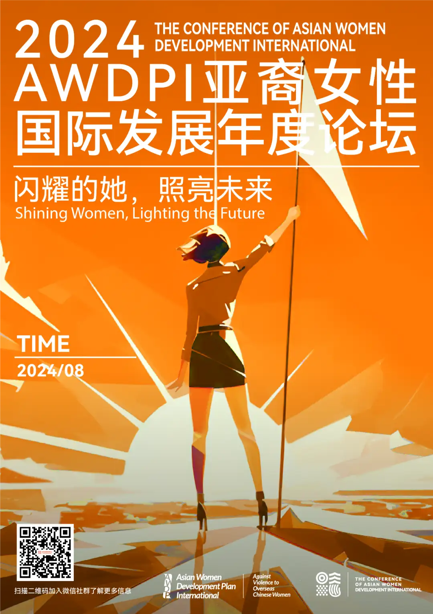
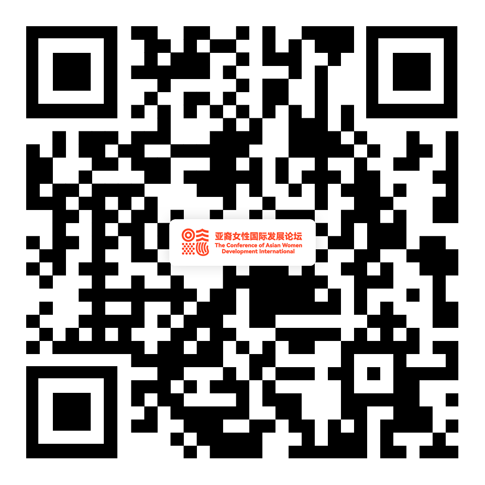
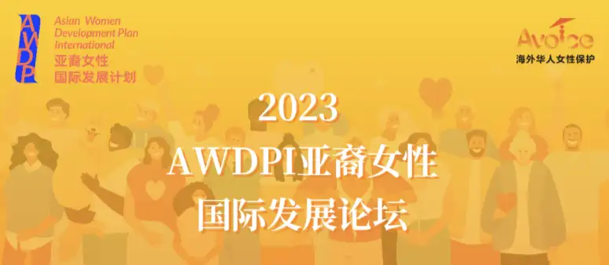

2024
AWDPI亚裔女性国际发展论坛
即将在鎏金八月启幕
本届AWDPI亚裔女性国际发展论坛将继续在线上举办，并进行实时直播。论坛将围绕“Orange the World——共建无暴力的未来”
“女性身份塑造济新纪元”两大主题，与世界各地关注亚裔女性发展的政府部门、学术机构、公益组织、专家学者、意见领袖和热心人士展开深度对话，呈现一场凝聚智慧、探索和热情的思想盛宴。

★ 学术演讲 ★
在学术演讲环节，海内外专家学者将聚焦性别暴力幸存者如何获取多维度支持、亚裔女性劳工在职场中的挑战与机遇、文化产品中的性别角色研究，以及新时代中女性身份塑造等议题，分享全球最新的实践经验和各自的观察与洞见。
★ 圆桌讨论 ★
在圆桌讨论环节，来自不同国家的公益组织代表、法律专家、性别研究专家、杰出女性代表等，将围绕
如何支持海外留学生预防高校性别暴力、女性如何突破约束、悦纳自我，以及女性如何在教育、 ⽂化、科技等领域引领潮流，推动世界发展等议题展开深度探讨，通过多元视⾓和创造性思考，激发思想的碰撞。
★ 论文评议 ★
在论文评议环节，将征集并展示与性别议题相关的学术论⽂，由学术专家进行现场评议
，缩小 “学术研究”与“公共普及”之间的距离，推动更多青年参与性别议题的思考和讨论。
★ 辩论赛 ★
在辩论表演赛环节，辩手们将围绕“在当下，‘女性优先’是否有助于性别平权？”进行深入探讨，关注此态度与行为对促进性别平等的 潜在益处与挑战。通过辩论的形式，展现不同视角和见解，以期推动对性别平权议题的深入理解，全面探索与广泛讨论。

女性身份塑造的新纪元已经到来，
让我们相聚
2024AWDPI亚裔女性国际发展论坛，
共同展望现代女性如何在
文化、政治、经济和社会等各个领域
突破传统框架的限制，
创造更加勇敢、更加耀眼的自我表达方式。
AWDPI亚裔女性国际发展论坛简介
作为亚裔女性国际发展计划的品牌项目之一，AWDPI亚裔女性国际发展论坛致力于：
在全球范围内搭建与政府、组织、企业和个人的对话机制与网络，提升海外亚裔女性的全面发展，共同促进安全、平等、 友善的发展环境，并提高其参与政治与经济事务的机会；
邀请海外亚裔困境女性参与到就业、保护等问题的研究与讨论，提高弱势群体可见度，从而提升外界对其生存状况的关注和支持；
聚焦新兴领域和创新议题，探索海外亚裔女性在新兴领域发展中面临的问题、机遇与挑战，促进她们的平等与发展。
欢迎参与论坛
如果您希望参与本次论坛，
请扫描下方二维码加入论坛社群
与嘉宾和其他观众进行交流探讨
期待您的参与！

查看往届AWDPI亚裔女性发展论坛的相关内容


撰稿｜田博
排版/封面｜舸